作業 05
這次的作業五使用YOLOv12n訓練主動脈瓣物件偵測模型。學會透過調整不同的參數和各種版本的YOLO模型，嘗試不同的可能性看看怎麼得到更好的結果。有時候只增加訓練的epoch不一定會讓模型的分數上升，可能因為過度的擬合導致分數反而下降。
| 總分 | 完成後打勾 | 配分 | 分項描述 |
|---|---|---|---|
| 4 | Simple baseline - 完成 baseline Colab 訓練得到訓練分數及訓練權重 | ||
| 4 | Medium baseline - 調整訓練筆數、Epochs 或其他參數得到比 Simple baseline 更高的分數 | ||
| 2 | Strong baseline - 使用不同版本、大小模型進行訓練並繳交 Colab | ||
| -10 | 沒有寫100字心得 |
| Simple Baseline mAP50 分數圖片 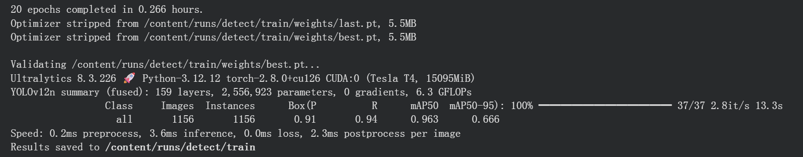 |
| Medium Baseline mAP50 分數圖片，調整 1~40 train、41~50 val，Epochs=50，batch=4 |
| Strong Baseline Colab連結: https://colab.research.google.com/drive/12TiI-ecPRb7XbdieOfM1V2u4zbnyonkp?usp=sharing 1.使用YOLO12s 2.使用YOLO12m 3.使用YOLO12l 4.使用YOLO12x 5.使用YOLO11n 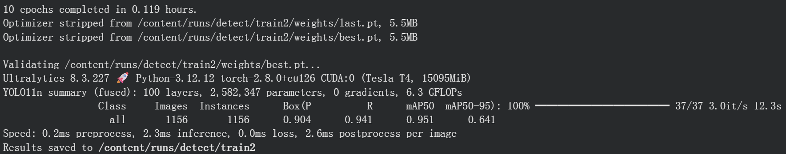 6.使用YOLO11s 7.使用YOLO11m 8.使用YOLO11l 9.使用YOLO11x 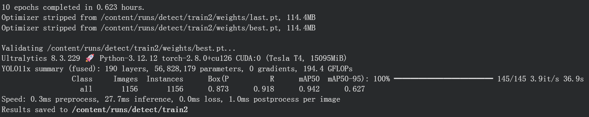 10.使用YOLO10n 11.使用YOLO10s  12.使用YOLO10m
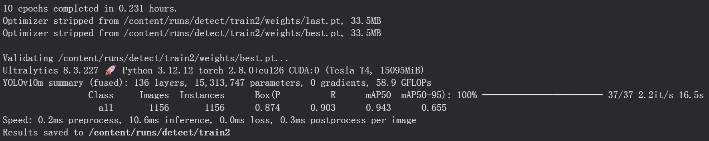
13.使用YOLO10b
14.使用YOLO10l
15.使用YOLO10x
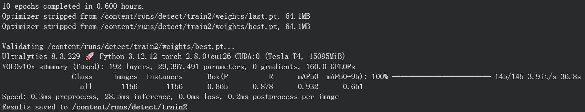
16.使用YOLOv9t
17.使用YOLOv9s
18.使用YOLOv9m
19.使用YOLOv9c
20.使用YOLOv9e
21.使用YOLOv8n
22.使用YOLOv8s
23.使用YOLOv8m
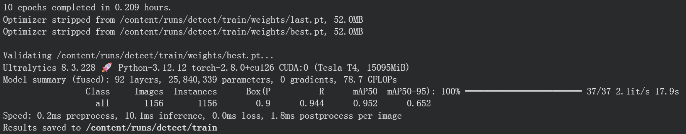
24.使用YOLOv8l
25.使用YOLOv8x
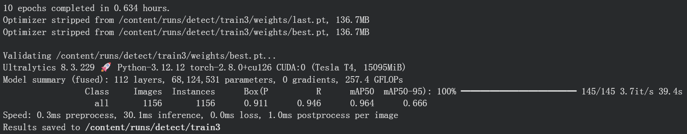
26.使用YOLOv6n
27.使用YOLOv6s
12.使用YOLO10m
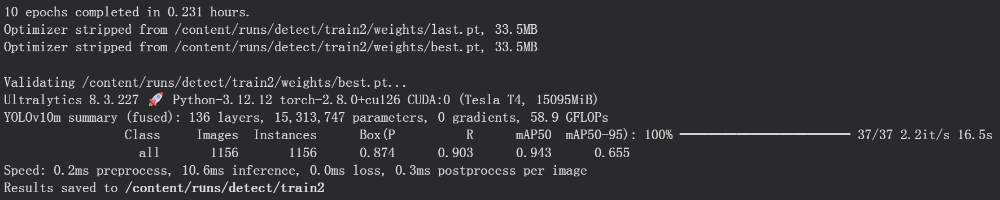
13.使用YOLO10b
14.使用YOLO10l
15.使用YOLO10x
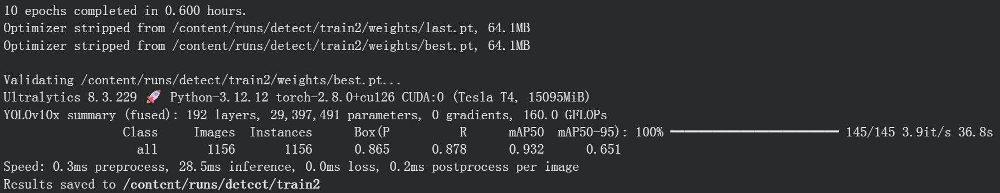
16.使用YOLOv9t
17.使用YOLOv9s
18.使用YOLOv9m
19.使用YOLOv9c
20.使用YOLOv9e
21.使用YOLOv8n
22.使用YOLOv8s
23.使用YOLOv8m
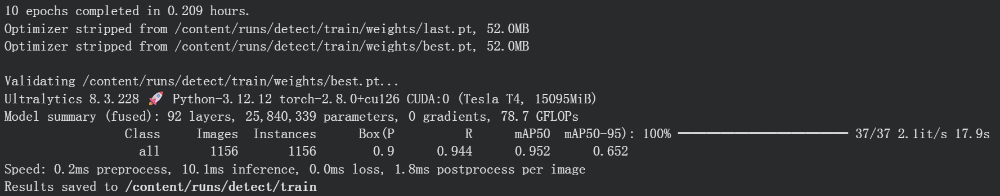
24.使用YOLOv8l
25.使用YOLOv8x
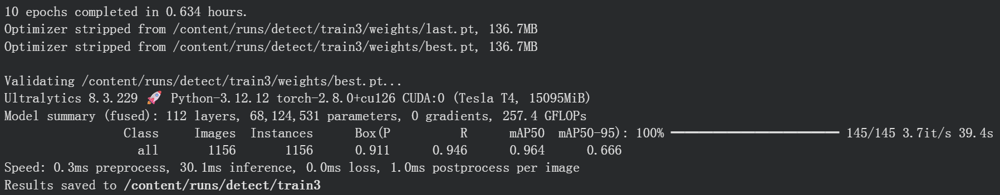
26.使用YOLOv6n
27.使用YOLOv6s
 28.使用YOLOv6m
29.使用YOLOv6l
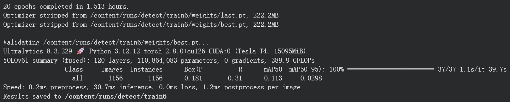
30.使用YOLOv6x
31.使用YOLOv5n
32.使用YOLOv5s
33.使用YOLOv5m
34.使用YOLOv5l
35.使用YOLOv5x
36.使用YOLOv3
37.使用YOLOv3-tiny
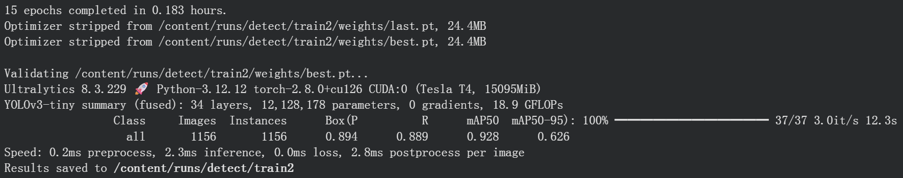
38.使用YOLOv3-spp
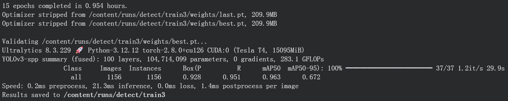
28.使用YOLOv6m
29.使用YOLOv6l
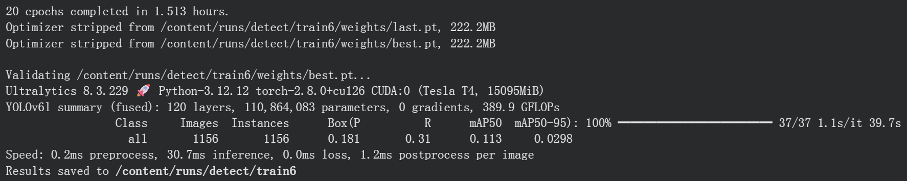
30.使用YOLOv6x
31.使用YOLOv5n
32.使用YOLOv5s
33.使用YOLOv5m
34.使用YOLOv5l
35.使用YOLOv5x
36.使用YOLOv3
37.使用YOLOv3-tiny
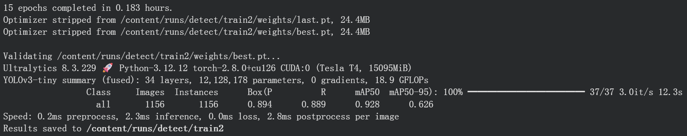
38.使用YOLOv3-spp
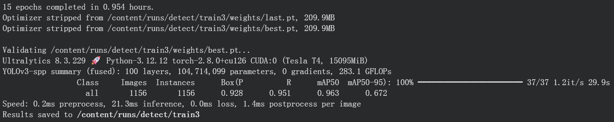
|